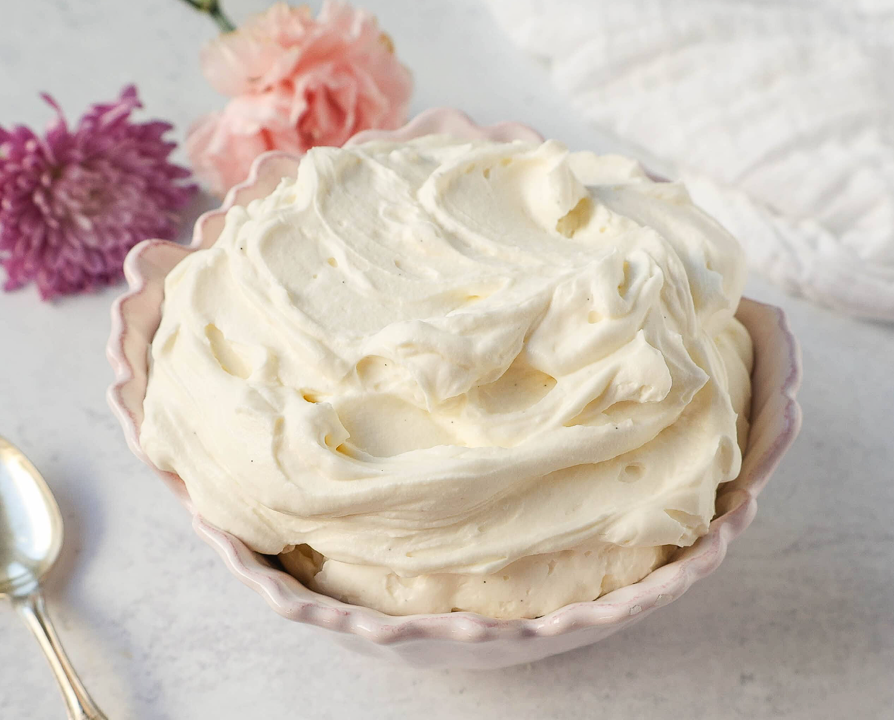

Description
A sweet mascarpone-based cream that goes well with berries and can be thickened as a delicious cake frosting
Ingredients:
- 200g heavy cream
- 100g mascarpone
- Vanilla
- 40/50g powdered sugar
- Prep Time: 10
- Cook Time: 10
- Additional Time: 10
- Total Time: 30 mins